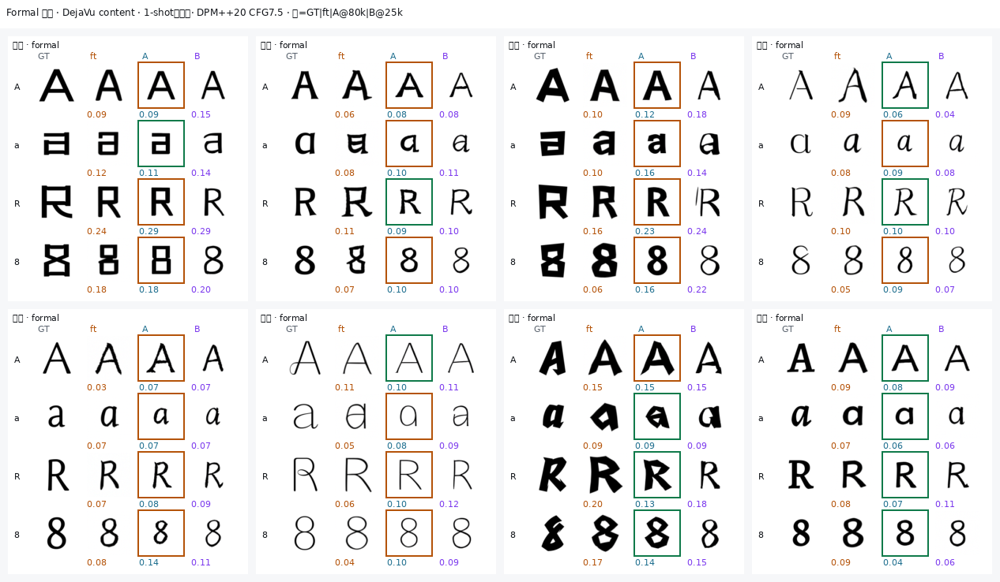
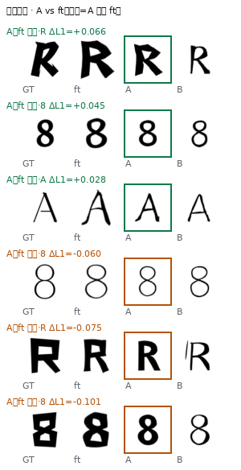

ICLR 2027 · HR-Font · 更新 2026-08-31 14:41 · 唯一汇报入口
跨语种 few-shot 字体生成：给你一款从未见过的中文字体 + 1 个汉字「永」，模型要生成这款字体下的拉丁字母 / 标点（如 a）。
我们改什么：官方让 RSI 结构分支「看汉字 style 图」→ 我们改成「看 Δ = 库混合同字 − DejaVu content」。
| 集合 | 规模 | 用途 |
|---|---|---|
| 训练池 | 42 款字体 × P1（122 类字符） | ft / A / B 训练；Demo-8 绝不进入 |
| 测试 Demo-8 | 8 款字体（创黑/篆变/斗体/风雅/汉真/活页/静雅/凌风） | 只评测，8×122≈976 格 |
| Bank 字库 | 42 训练字体的预渲染拉丁图 | 推理时按 α 混合同字 Δ；不含测试字体 |
三实验共用 FontDiffuser 骨干。唯一核心差别：RSI 结构分支接什么；B 额外加 support。
| 设置项 | ft 基线 | Stage A | Stage B |
|---|---|---|---|
| 初始化 | 官方 Phase-1 | 从 ft@25k 热启 | 从 A@80k 热启 |
| 训练步数 | 25k | 80k | 25k |
| 训哪些参数 | UNet 全参 | UNet + reinit RSI offset | 只训 SupportAdapter |
| RSI 结构分支 | Ec(汉字 style) | Ec(α混库同字)−Ec(content) | 同 A |
| Support | 无 | 无 | gap≥0.35 注入 token |
| Content / 分辨率 | DejaVu · 96×96 · 42 款训练字体 | ||
| CFG dropout | content+style 10% | + Δ 25% zero | + support 20% drop |
主表 L1 绑定下方 metrics 时间戳 + ckpt；训练与评测分列，train≠eval 处已标 ❌/⚠️。 机器可读：PROTOCOL_AUDIT.json（审计生成 2026-08-31 14:41:01）
脚本漂移警告：部分 eval 脚本修改时间晚于 metrics JSON。勿用现行脚本反推当时跑法；复现请对照 JSON 中 sha256 / 日志。
| 项 | 训练 | 评测 | 影响 |
|---|---|---|---|
| Content | ContentImage 预渲 DejaVu @128 灰度→jpg→Resize96 | live DejaVu binary-search @96 RGB | domain gap；ft/A/B 训练一致、eval 一致，互相公平 |
| Style | A/B: bank render_fit 随机 ref8；ft: 随机 CN 池 | live 测试字体「永」 | train/eval style 分布不同；三方法 eval 相同 |
| Bank / Δ 混图 | render_fit ~8% 边距 | 同 bank PNG；非 live 渲染 | Δ 输入与 live content/style 不一致（设计如此） |
| Target/GT | bank 或 TargetImage @128 | gt_latin @128→96 | L1 对齐 unified_v1 GT |
训：scripts/retrain_v2_finetune_fontdiffuser.py → code/FontDiffuser/train.py · 评：scripts/hrfont_e2_official_eval.py (FontDiffuserOfficialDPM) · ckpt mtime=2026-08-07 05:11:50 · metrics t=2026-08-28 06:02:09 · L1=0.0810
训练阶段
| 输入 | 来源 | 渲染 | 脚本 | 尺寸 | 预处理 | train↔eval |
|---|---|---|---|---|---|---|
| Content | data/fontdiffuser/train/ContentImage/uXXXX.jpg | build_retrain_v2_dataset: DejaVu binary-search @128 灰度 → jpg RGB | scripts/build_retrain_v2_dataset.py + build_retrain_v2_fontdiffuser_data.py | 128 源图 → FontDataset Resize(96) | Resize(96) → ToTensor → Normalize(mean=0.5, std=0.5) | ❌ eval 为 live @96 RGB（算法同，分辨率/色彩空间不同） |
| Style | data/.../StyleImage/<font>/<font>+uXXXX.jpg | 同字体中文池全量 PNG→jpg（非仅 ref8） | scripts/build_retrain_v2_fontdiffuser_data.py | 128→96 | Resize(96) → ToTensor → Normalize(mean=0.5, std=0.5) | ❌ eval 固定 live「永」 FontDataset 随机采样同字体任一汉字 |
| Target | data/.../TargetImage/<font>/<font>+uXXXX.jpg | 训练字体英文 GT @128 灰度→jpg | scripts/build_retrain_v2_fontdiffuser_data.py | 128→96 | Resize(96) → ToTensor → Normalize(mean=0.5, std=0.5) | — |
| RSI 结构分支 | Ec(style_image) | content_encoder(style) 多尺度残差 | code/FontDiffuser/src/model.py | 特征空间 | — | ✅ eval 同 Ec(style) 官方 FontDiffuser RSI；无 Δ |
| Δ / Support | — | — | — | — | — | — |
评测阶段
| 输入 | 来源 | 渲染 | 脚本 | 尺寸 | 预处理 | train↔eval |
|---|---|---|---|---|---|---|
| Content | /usr/share/fonts/truetype/dejavu/DejaVuSans.ttf + 字符 c | binary-search 最大字号 + 居中（14 iter, margin 8px） | scripts/hrfont_e2_official_eval.render | 96×96 RGB | Resize(96) → ToTensor → Normalize(mean=0.5, std=0.5) | ❌ 训练用预渲 ContentImage（见下） P1 全字符；seed=123 |
| Style | Demo-8 测试字体 TTF +「永」 | 同上 render() | scripts/hrfont_e2_official_eval.render | 96×96 RGB | Resize(96) → ToTensor → Normalize(mean=0.5, std=0.5) | ❌ 训练 style 来源不同（见各实验 train） 1-shot 固定「永」；STYLE_CHAR 来自 data/retrain_v2/meta.json |
| GT（L1） | data/unified_v1/renders/128/gt_latin/<font>/<char>.png | build_retrain_v2_dataset @128 L 灰度 | scripts/build_retrain_v2_dataset.render | 128→96 bilinear（to_arr） | 灰度 /255 | — 仅评测 bank r96 fallback 若缺失 |
| RSI 结构分支 | Ec(live style「永」) | FontDiffuserOfficialDPM.forward | scripts/hrfont_e2_official_eval.py | 特征空间 | — | ⚠️ 与 train 同公式，style 图来源不同 |
训：scripts/hrfont_e2_stageA96_formal_train.py · 评：scripts/hrfont_e2_official_eval.py (FontDiffuserDeltaDPM) · ckpt mtime=2026-08-28 04:46:09 · metrics t=2026-08-28 06:02:09 · L1=0.0870
训练阶段
| 输入 | 来源 | 渲染 | 脚本 | 尺寸 | 预处理 | train↔eval |
|---|---|---|---|---|---|---|
| Content | ContentImage/uXXXX.jpg（与 ft 同源） | 预渲 DejaVu @128→96 | StageAFormalSet.content_cache | 96 | Resize(96) → ToTensor → Normalize(mean=0.5, std=0.5) | ❌ eval live DejaVu @96 |
| Style | data/hrfont/e0_bank/r96/<font>/uXXXX.png | render_fit ~8% 边距 | scripts/hrfont_e0_build_bank.render_fit | 96 RGB | Resize(96) → ToTensor → Normalize(mean=0.5, std=0.5) | ❌ eval live「永」 随机 ref8 之一；非 1-shot 固定 |
| Target | bank r96 同字体同字 PNG | render_fit | hrfont_e0_build_bank | 96 | Resize(96) → ToTensor → Normalize(mean=0.5, std=0.5); target_01 denorm for VGG | — |
| Δ | bank r96 top-3 训练字体同字 PNG 像素加权混 | α=softmax(cos(proto)/τ) τ=0.07 M=3；像素 mix 后 Ec 作差 | StageAFormalSet._alpha + train forward | 96 RGB tensor | Resize(96) → ToTensor → Normalize(mean=0.5, std=0.5) on mix PNG | ⚠️ eval 同 α 逻辑；bank 为 render_fit 非 live dropout 25% zero delta_res |
| RSI 结构分支 | Ec(Δ_img) − Ec(content) | delta_res = mix_res − content_res | hrfont_e2_stageA96_formal_train.py | 特征差 | — | ✅ eval FontDiffuserDeltaDPM 同式 |
评测阶段
| 输入 | 来源 | 渲染 | 脚本 | 尺寸 | 预处理 | train↔eval |
|---|---|---|---|---|---|---|
| Content | /usr/share/fonts/truetype/dejavu/DejaVuSans.ttf + 字符 c | binary-search 最大字号 + 居中（14 iter, margin 8px） | scripts/hrfont_e2_official_eval.render | 96×96 RGB | Resize(96) → ToTensor → Normalize(mean=0.5, std=0.5) | ❌ 训练用预渲 ContentImage（见下） P1 全字符；seed=123 |
| Style | Demo-8 测试字体 TTF +「永」 | 同上 render() | scripts/hrfont_e2_official_eval.render | 96×96 RGB | Resize(96) → ToTensor → Normalize(mean=0.5, std=0.5) | ❌ 训练 style 来源不同（见各实验 train） 1-shot 固定「永」；STYLE_CHAR 来自 data/retrain_v2/meta.json |
| GT（L1） | data/unified_v1/renders/128/gt_latin/<font>/<char>.png | build_retrain_v2_dataset @128 L 灰度 | scripts/build_retrain_v2_dataset.render | 128→96 bilinear（to_arr） | 灰度 /255 | — 仅评测 bank r96 fallback 若缺失 |
| Δ | alpha_mix(proto, bank, train, c) | 测试字体 proto 不在 cache 时用 ref8 现场 Ec 均值 | hrfont_e2_official_eval.alpha_mix | 96 RGB | Resize(96) → ToTensor → Normalize(mean=0.5, std=0.5) | ⚠️ 像素混 bank PNG；与 train 同 α |
| RSI 结构分支 | Ec(Δ) − Ec(content) | FontDiffuserDeltaDPM._hidden | hrfont_e2_official_eval.py | 特征差 | — | ✅ |
训：scripts/hrfont_e2_stageB96_train.py · 评：scripts/hrfont_e2_stageB_official_eval.py · ckpt mtime=2026-08-28 19:58:01 · metrics t=2026-08-29 02:07:08 · L1=0.0964
训练阶段
| 输入 | 来源 | 渲染 | 脚本 | 尺寸 | 预处理 | train↔eval |
|---|---|---|---|---|---|---|
| Content/Style/Target/Δ | 同 Stage A formal | 同 StageAFormalSet / StageBSet | hrfont_e2_stageB96_train.py StageBSet | 96 | Resize(96) → ToTensor → Normalize(mean=0.5, std=0.5) | 同 A 的 train 列 |
| Support | pick_support → bank r96 支撑字图 | gap≥0.35 → MMR top-3 q × α 字体混 | scripts/hrfont_support_utils.pick_support | 96 RGB | Resize(96) → ToTensor → Normalize(mean=0.5, std=0.5) → pool_ec → SupportAdapter | ⚠️ eval 需 font_proto=proto（8/29 前 bug 致 support=0） train 20% drop support |
评测阶段
| 输入 | 来源 | 渲染 | 脚本 | 尺寸 | 预处理 | train↔eval |
|---|---|---|---|---|---|---|
| Content | /usr/share/fonts/truetype/dejavu/DejaVuSans.ttf + 字符 c | binary-search 最大字号 + 居中（14 iter, margin 8px） | scripts/hrfont_e2_official_eval.render | 96×96 RGB | Resize(96) → ToTensor → Normalize(mean=0.5, std=0.5) | ❌ 训练用预渲 ContentImage（见下） P1 全字符；seed=123 |
| Style | Demo-8 测试字体 TTF +「永」 | 同上 render() | scripts/hrfont_e2_official_eval.render | 96×96 RGB | Resize(96) → ToTensor → Normalize(mean=0.5, std=0.5) | ❌ 训练 style 来源不同（见各实验 train） 1-shot 固定「永」；STYLE_CHAR 来自 data/retrain_v2/meta.json |
| GT（L1） | data/unified_v1/renders/128/gt_latin/<font>/<char>.png | build_retrain_v2_dataset @128 L 灰度 | scripts/build_retrain_v2_dataset.render | 128→96 bilinear（to_arr） | 灰度 /255 | — 仅评测 bank r96 fallback 若缺失 |
| Δ | 同 Stage A eval | alpha_mix + set_cond | hrfont_e2_stageB_official_eval.py | 96 | Resize(96) → ToTensor → Normalize(mean=0.5, std=0.5) | ✅ 同 A |
| Support | pick_support(..., font_proto=proto) | SupportAdapter → concat style_hidden | hrfont_e2_stageB_official_eval.py + hrfont_support_utils | token | pool_ec | ✅ 有效 run 952/976 |
| 脚本 | mtime | sha256[:16] | 评测记录 | 晚于评测? |
|---|---|---|---|---|
scripts/hrfont_e2_official_eval.py | 2026-08-31 12:55:38 | 57ebd27b49e38cce | 2026-08-28 06:02:09 | ⚠️ 是 |
scripts/hrfont_e2_stageB_official_eval.py | 2026-08-31 12:46:39 | 368262fa1ebcb24b | 2026-08-29 02:07:08 | ⚠️ 是 |
scripts/hrfont_support_utils.py | 2026-08-31 12:46:33 | b27f00478a1cb3b2 | 2026-08-29 02:07:08 | ⚠️ 是 |
scripts/hrfont_formal_viz_build.py | 2026-08-31 12:46:41 | 2c24098c16b01248 | 2026-08-31 12:20:40 | ⚠️ 是 |
scripts/hrfont_e2_stageA96_formal_train.py | 2026-08-31 12:45:30 | d689b271d7f4f5e3 | 2026-08-26 01:10:28 | ⚠️ 是 |
scripts/hrfont_e2_stageB96_train.py | 2026-08-31 12:46:34 | 858a01223116fb98 | 2026-08-28 19:58:00 | ⚠️ 是 |
| 时间 | 实验 | L1 | 原因 | 有效替代 |
|---|---|---|---|---|
| 2026-08-29 01:10:04 | stageB@25k | 0.0879 | pick_support 未传 font_proto；测试字体不在 style_proto cache | metrics_stageB_25000.json @ 2026-08-29 02:07:08 |
对每个测试字体 F、每个字符 c：
| 项目 | ft | Stage A | 相同? |
|---|---|---|---|
| 测集 / Content / Style / 采样 | Demo-8×P1 · DejaVu · 1-shot永 · DPM20 CFG7.5 | 同左 | ✅ |
| 权重 | ft@25k | ft@25k 再训 80k | ⚠️ A 多训 |
| 唯一算法差 | RSI←Ec(style) | RSI←Δ | 验证目标 |
| 实验 | 要回答什么 | 和谁比 | L1 | 状态 |
|---|---|---|---|---|
| ft | 官方 RSI 跨语微调上限 | 基线 | 0.0810 | ✅ |
| Stage A | RSI 改接 Δ 会不会崩 | vs ft | 0.0870 | ✅ PASS |
| Stage B | support 能否帮高 gap 字 | vs A | 0.0964 | ❌ |
| Dropout | Δ dropout 是否必要 | @10k 趋势 | R2 最差 | ✅ |
| E3 | 增益来自 Δ 还是 retrain | vs A | 0.0836 | ✅ |
| 方法 | L1↓ | vs ft |
|---|---|---|
| ft | 0.0810 | — |
| Stage A | 0.0870 | +7.3% |
| Stage B | 0.0964 | +18.9% |
| 字体 | ft | A | B | A胜ft |
|---|---|---|---|---|
| 创黑 | 0.106 | 0.121 | 0.137 | — |
| 篆变 | 0.064 | 0.065 | 0.074 | — |
| 斗体 | 0.099 | 0.115 | 0.150 | — |
| 风雅 | 0.060 | 0.066 | 0.062 | — |
| 汉真 | 0.064 | 0.086 | 0.083 | — |
| 活页 | 0.063 | 0.068 | 0.070 | — |
| 静雅 | 0.114 | 0.107 | 0.122 | ✓ |
| 凌风 | 0.077 | 0.068 | 0.073 | ✓ |
| 桶 | n | ft | A | A胜ft | B | B胜A |
|---|---|---|---|---|---|---|
| 低 | 320 | 0.101 | 0.109 | 39% | 0.120 | 39% |
| 中 | 320 | 0.093 | 0.100 | 38% | 0.111 | 37% |
| 高 | 328 | 0.049 | 0.054 | 40% | 0.060 | 38% |
三桶 A 胜率均 ~38–40%，假设未成立。
| 设计点 | 代码实现 | 一致? | 影响 |
|---|---|---|---|
| RSI 看 Δ 特征差 | delta_res = Ec(mix) − Ec(content) | ✅ | 核心接线正确 |
| α 用 ref8 估风格 | REF8 + style proto cosine | ✅ | — |
| Demo-8 不进池 | meta 排除 + leave-one-out | ✅ | — |
| Content 中性字体 B0 | DejaVu（非 Song/Kai） | ⚠️ | 与论文字面不同；与 ft 公平对齐 |
| Δ 用特征差（非像素差） | 像素混库图 → Ec 再作差 | ⚠️ | 近似实现；与设计 §4.2 等价路径 |
| Stage B support | gap≥0.35 + MMR + Adapter | ✅ | 逻辑对齐；效果负 |
| Eval style/content | live render | ⚠️ | Train 用预渲 jpg；有 domain gap |
| Bank 渲染 | render_fit ~8% 边距 | ❌ | 与 eval binary-search 不同；仅用于 Δ 混图 |
| 测试字体 style proto | 不在缓存，eval 现场算 | ⚠️ | 8/29 前 B eval 无效 |
| 日期 | 问题 | 能否引用 |
|---|---|---|
| 8/29 02:07 | 修复 proto + CFG batch | ✅ L1=0.0964 support=952 |
| 8/29 01:10 | support=0（proto 未传） | ❌ |
逐输入明细见 §④ · PROTOCOL_AUDIT.json
Demo-8 × AaR8 · DejaVu · 1-shot永 · DPM20 CFG7.5 · 生成于 2026-08-31 12:20:40


绿框 = Stage A L1 优于 ft；每格下方数字为 L1。
| Run | L1 | 备注 |
|---|---|---|
| R0@80k | 0.0870 | formal main @80k (reference, not 10k) |
| R1_cfg01_d01 | 0.0831 | |
| R2_cfg01_d00 | 0.0882 | |
| R3_style025_d025 | 0.0815 | |
| R4_cfg025_d025 | 0.0840 |
R2(不 drop Δ)最差 → Δ dropout 必要。主结论看 R0@80k=0.0870。